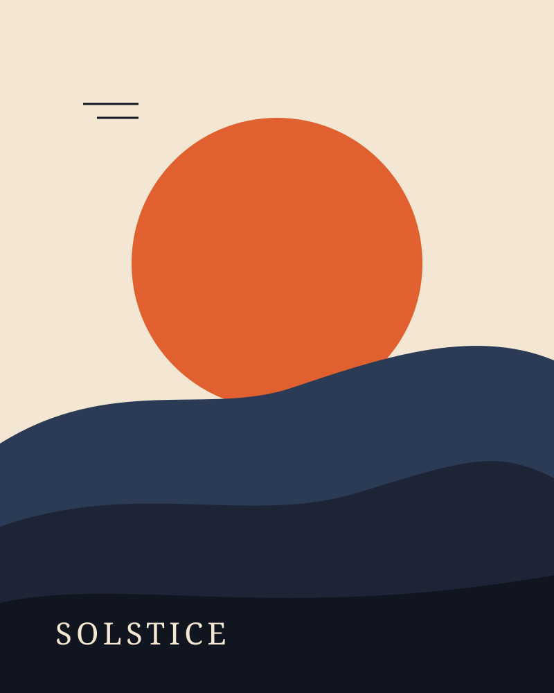
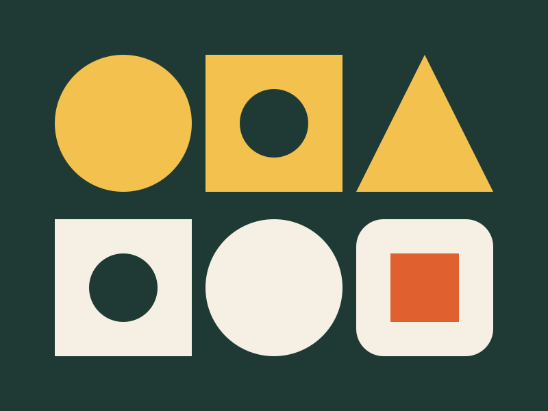
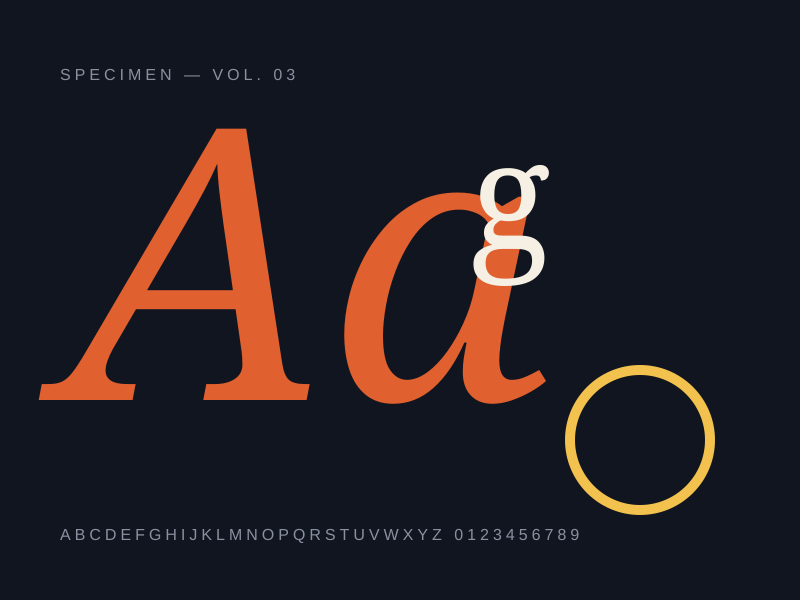
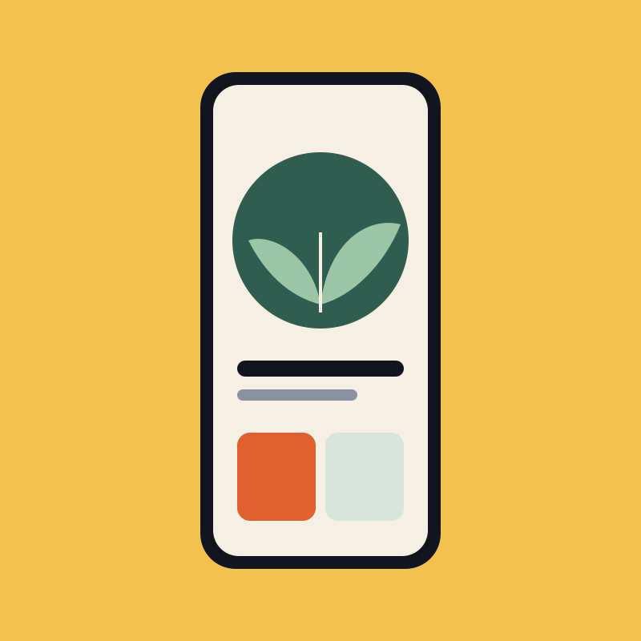

Case study · Identity & posters
Solstice Festival
A sun-soaked identity for a three-day music and arts festival on the Alentejo coast — built to glow on a phone screen and on a two-metre billboard.
- Client
- Solstice Collective
- Year
- 2026
- Role
- Identity, illustration, art direction
- Timeline
- 10 weeks

The challenge
Solstice had grown from a 400-person gathering into a sold-out weekend for 6,000, but its visuals hadn’t grown with it. Every year a different freelancer, a different logo, a different mood. Returning guests loved the festival; newcomers couldn’t tell it apart from a dozen others.
The brief was simple and hard at the same time: create a system that feels like the golden hour on the coast, that volunteers can use without a designer, and that still looks fresh in five years.



The approach
We spent the first week on location, sketching the landscape at sunrise and sunset. Three shapes kept coming back: the low disc of the sun, the soft ridge of the hills, and the line where land meets sea. Those became the building blocks of everything.
The palette is sampled from photographs taken across a single evening — from burnt orange to the deep navy of the last light. A generator in Figma lets volunteers pick a stage, a date and a mood, and it assembles an on-brand poster in seconds.
Results
“For the first time, people recognised our poster from across the street. The system basically designs itself now.”